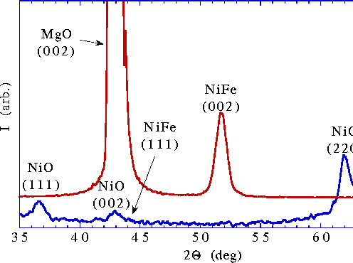
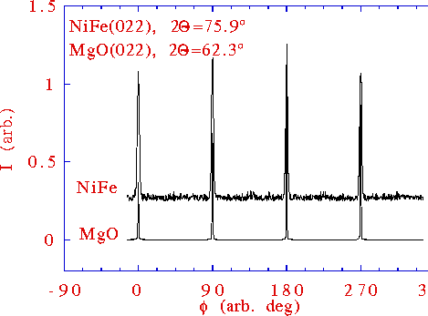

Figure 2: Comparison of x-ray spectra from NiO 500Å/NiFe 100Å bilayer films deposited simultaneously on polished single crystal MgO (001) and oxidized Si substrates.

The bottom scan in a) shows that the NiO on the oxidized silicon substrate is polycrystalline with a grain size of approximately 150Å. The top scan shows the NiO (111) and (022) Bragg peaks are absent in the bilayer grown on MgO. The MgO (002) substrate peak obscures the presence of the NiO (002) peak. A strong reflection is present from the NiFe (001) planes.

In b), phi scans at the NiFe (022) and the MgO (022) Bragg
angles are shown. The NiFe layer is epitaxially oriented
relative to the MgO substrate, confirming that the NiO layer
is also epitaxial.